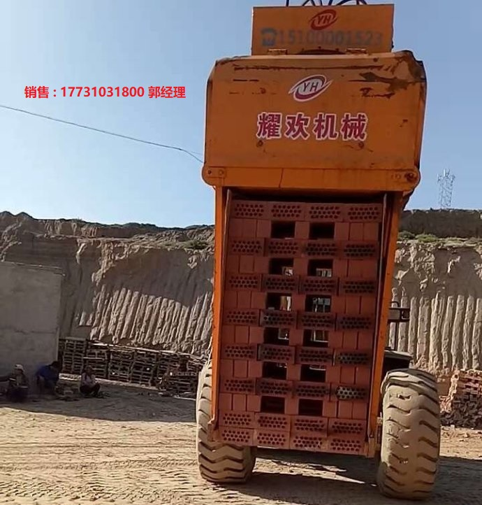
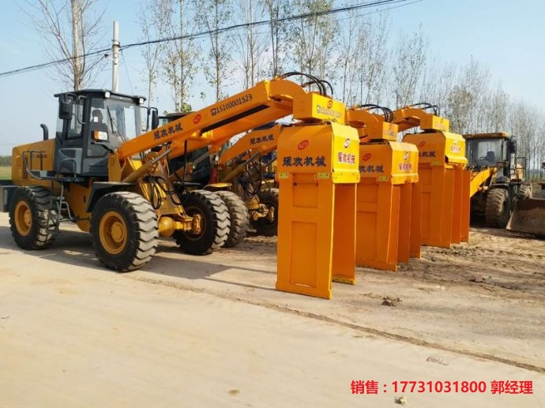
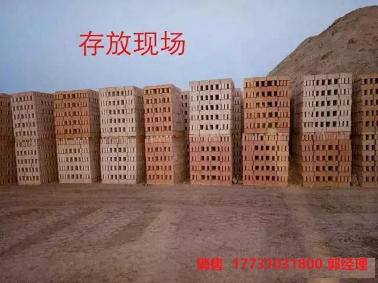
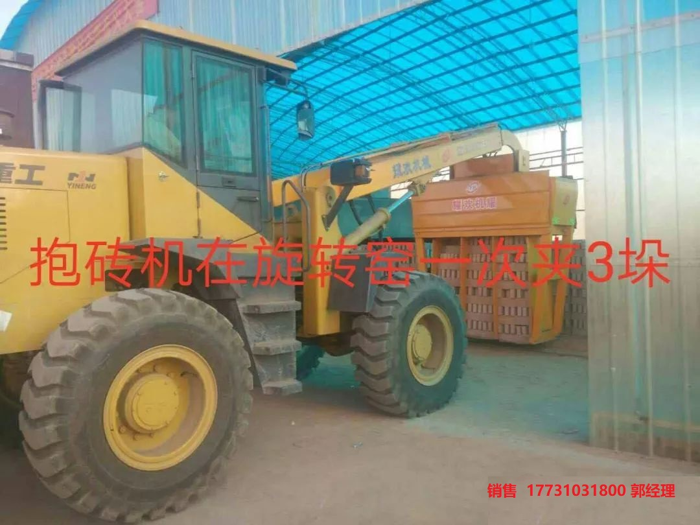

河北耀欢机械有限公司（抱砖机）
公司简介
河北耀欢机械有限公司
耀欢机械坐落于中国鸭梨之乡---河北魏县，是一家二十余年致力于研发、生产、销售于一体的砖厂设备装卸、码垛转运机械的研发生产及销售公司。公司拥有生产装卸、码垛转运机械的核心技术，耀欢机械坚持认真研发，严谨生产的理念，不断的在进步。
耀欢机械厂集科研开发，加工制造销售和售后服务为一体，在产品设计上针对自动码坯机和抱夹砖机普通存在的不足，做了重大改进，耀欢机械牌制砖机械设备产品已有10多个品种，适用于各种隧道窖灰砂砖厂。这各砖厂的转运运输上节约了大量的人力、财力，从而大大提高了生产效率。良好的客户口碑的得到了用户的认可，公司生产设备齐全、技术力量雄厚能根据企业的不同需求进行个性化的设计制作。
公司的产品也能够满足客户的要求。锐意进取、开拓创新，耀欢团队愿与您携手共创未来！
销售 郭洪涛 17731031800
产品特点
1、采用进口钢材结构整体框架钱多度高，可满足用户强度作业需要。
2、夹具可以前面神收回，减少操作时间，可以360°旋转。可满足不可生产环境的需要。
3、根据受力设计夹紧臂，牢固可靠，夹持力大，包夹数量多，寿命长。
4、铲车转向灵活，操作自如简捷，使用铲车做主机在行驶、起重装卸作业中更加平稳、安全、可靠。
5、本设备采用国内知名品牌30铲车(也可以用旧车30铲车改装)做主机，经久耐用，全国联保，配件低廉易于采购。


使用范围：2-4米隧道窖，蒸养砖、红砖、加气砖、水泥砖、一次最大可夹0-3吨的砖块




